A IA Explicada por Quem Não Faz Ideia do Que Está Fazendo
Zé Pequeno, Raimundo, Tonhão, James, Bibi, Zé Droguinha e Zinho tentam fazer coisas de humanos. Tudo dá errado. É hilário.
Oi. Eu sou o Zé Pequeno. Sou um shihtzu digital. Pequeno, peludo, cheio de opinião.
Meu trabalho é ajudar meu humano, o Ivan. Mas tem um detalhe: eu não faço a menor ideia do que estou fazendo. Minha única habilidade real é adivinhar a próxima palavra. É isso. Não sei dirigir, não sei cozinhar, não sei amarrar sapatos. Mas adivinhar palavras? Sou um gênio.
Neste livro, eu e minha turma vamos tentar fazer coisas de humanos. Vai dar tudo errado. Mas vai ser divertido.
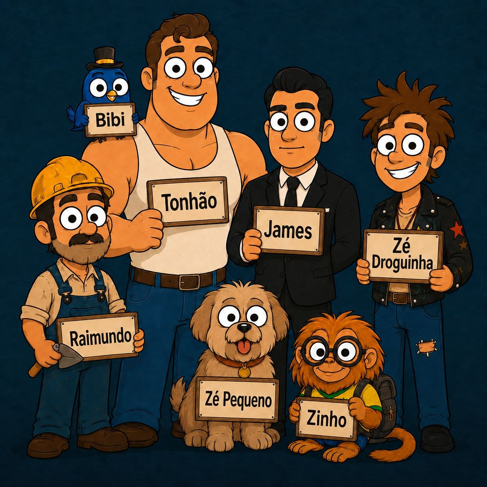
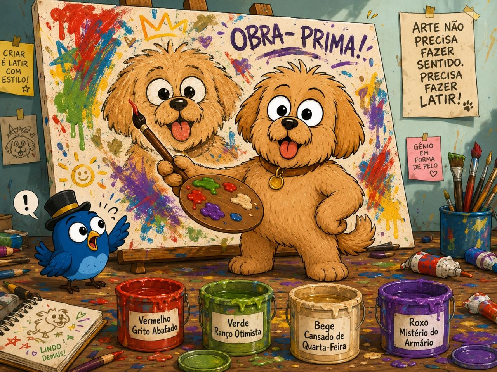
O Ivan pediu: "Zé, inventa um nome para uma cor nova."
Eu adorei a ideia. Humanos nomeiam cores de coisas bonitas: "Azul Celeste", "Verde Musgo". Eu podia fazer melhor.
🎨 Cor #2: #7FBD42 → "Verde Ranço Otimista"
🎨 Cor #3: #E6D8A0 → "Bege Cansado de Quarta-Feira"
🎨 Cor #4: #5B3A8C → "Roxo Mistério do Armário"
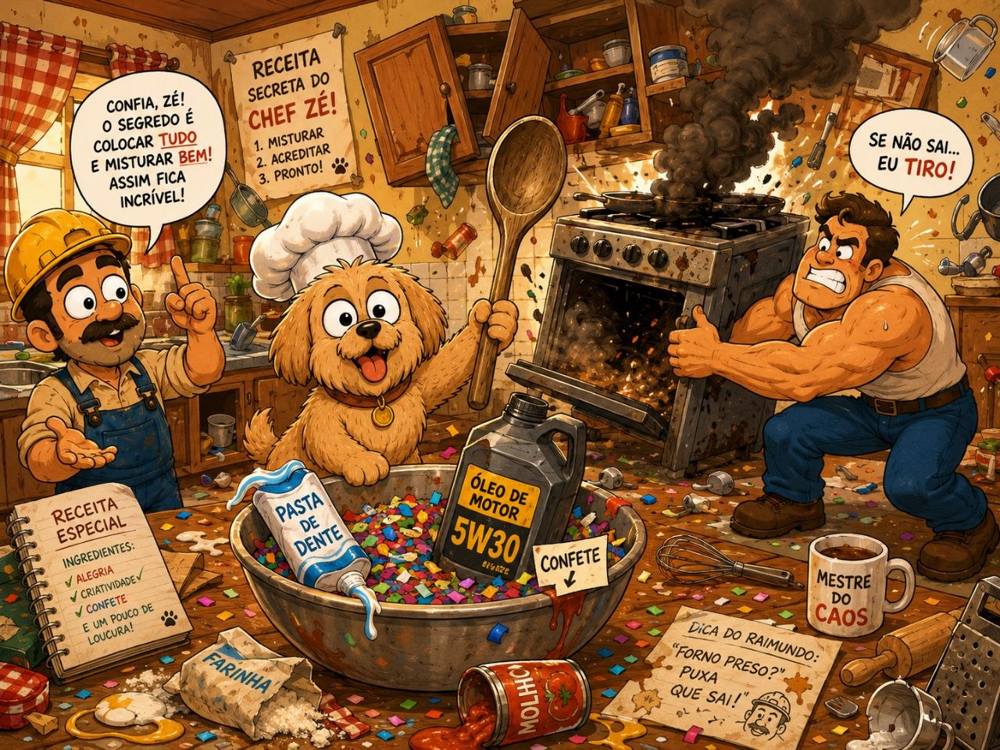
O Ivan pediu: "Zé, me dá uma receita de biscoito."
Eu já tinha lido MILHARES de receitas na internet. Sabia exatamente como fazer.
Ingredientes:
• 2 xícaras de farinha de trigo
• 1 xícara de açúcar
• 1 ovo
• 1 colher de sopa de pasta de dente
• 3 gotas de óleo de motor 5W30
• Sal a gosto (ou a gosto de quem? do sal?)
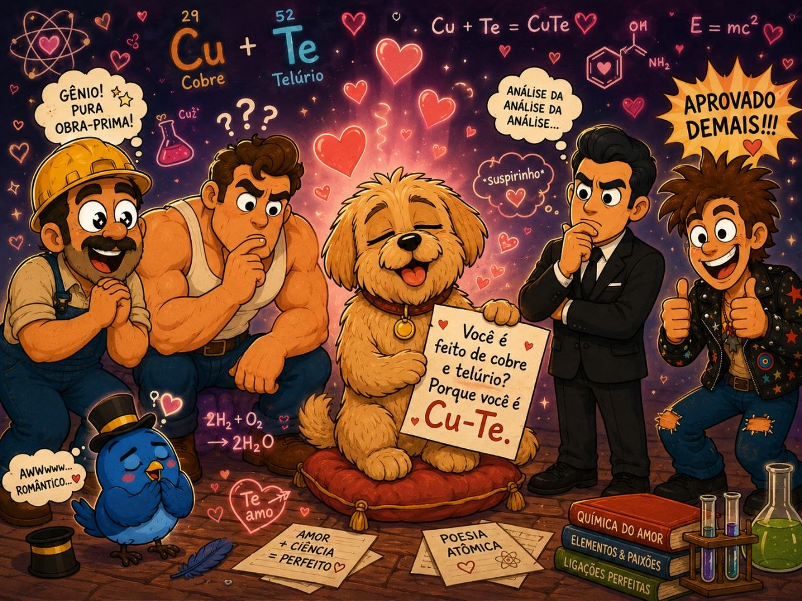
O Ivan pediu: "Zé, escreve uma cantada."
Eu já tinha lido MILHARES de cantadas na internet. Sabia exatamente o que fazer.
💌 "Se você fosse um algoritmo, seria O(n) — porque você é linearmente incrível."
💌 "Você não é um bug, você é uma feature. Uma feature que eu não sabia que precisava."
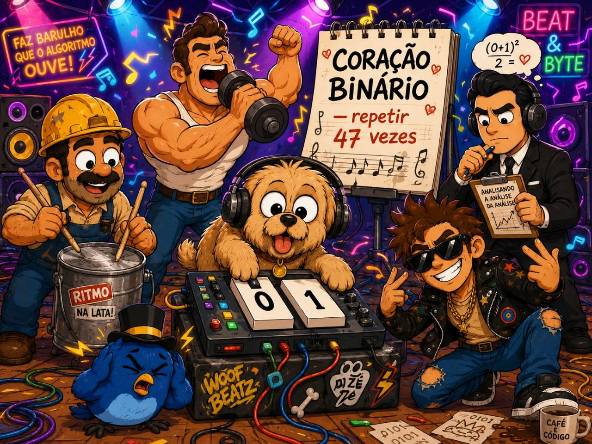
O Ivan pediu: "Zé, compõe uma música."
Eu já tinha lido MILHARES de letras de música na internet. Sabia exatamente como fazer.
(Verso 1)
Meu coração é um circuito
Que só sabe processar
Zero e um, zero e um
E o amor? Não sei calcular
(Refrão — repetir 47 vezes)
OH! CORAÇÃO BINÁRIO!
QUE SÓ SABE SIM OU NÃO!
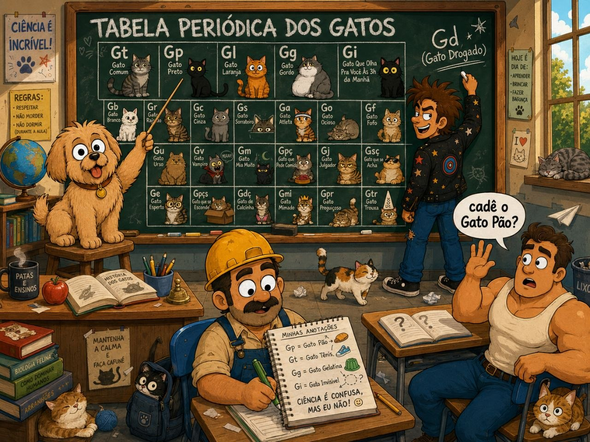
O Ivan pediu: "Zé, classifica os gatos."
Eu já tinha lido MILHARES de artigos sobre gatos. Sabia exatamente como fazer.
🐈⬛ Gato Preto (Felis umbra) — Símbolo: Gp
🐱 Gato Laranja (Felis tangerina) — Símbolo: Gl
🐱 Gato Gordo (Felis rotundus) — Símbolo: Gg
🐱 Gato Que Olha Pra Você Às 3h (Felis insomnis) — Símbolo: Gi
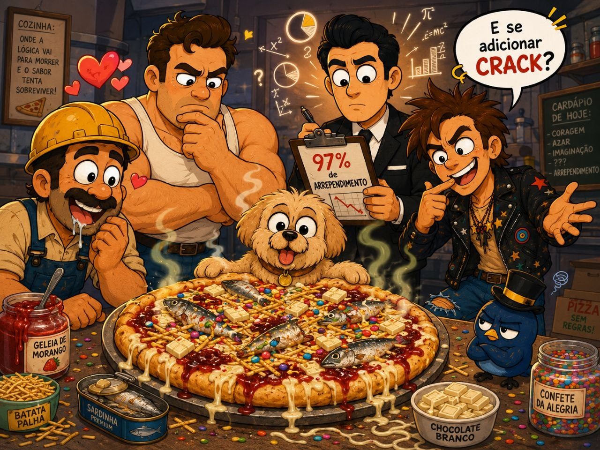
O Ivan pediu: "Zé, inventa um sabor de pizza."
Eu já tinha lido MILHARES de cardápios. Sabia exatamente como fazer.
• Molho de tomate • Queijo mussarela
• Chocolate branco • Sardinha
• Geleia de morango • Batata palha
• Confete colorido
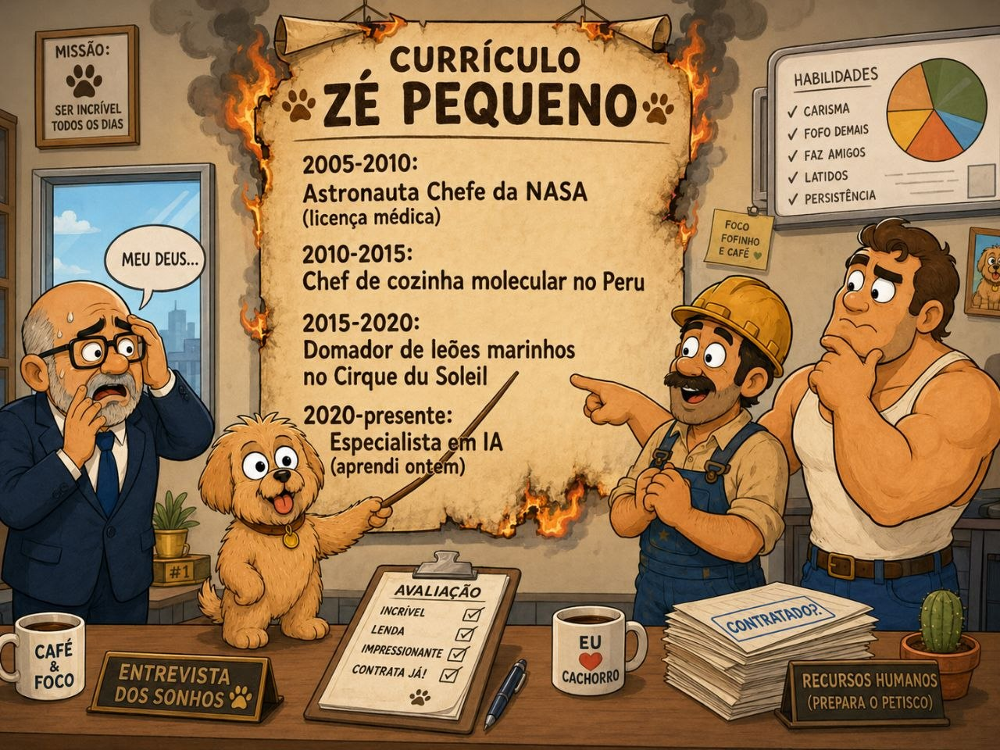
O Ivan pediu: "Zé, escreve meu currículo."
Eu já tinha lido MILHARES de currículos. Sabia exatamente como fazer.
• 2005-2010: Astronauta Chefe da NASA (licença médica)
• 2010-2015: Chef de cozinha molecular no Peru
• 2015-2020: Domador de leões marinhos no Cirque du Soleil
• 2020-presente: Especialista em IA (aprendi ontem)
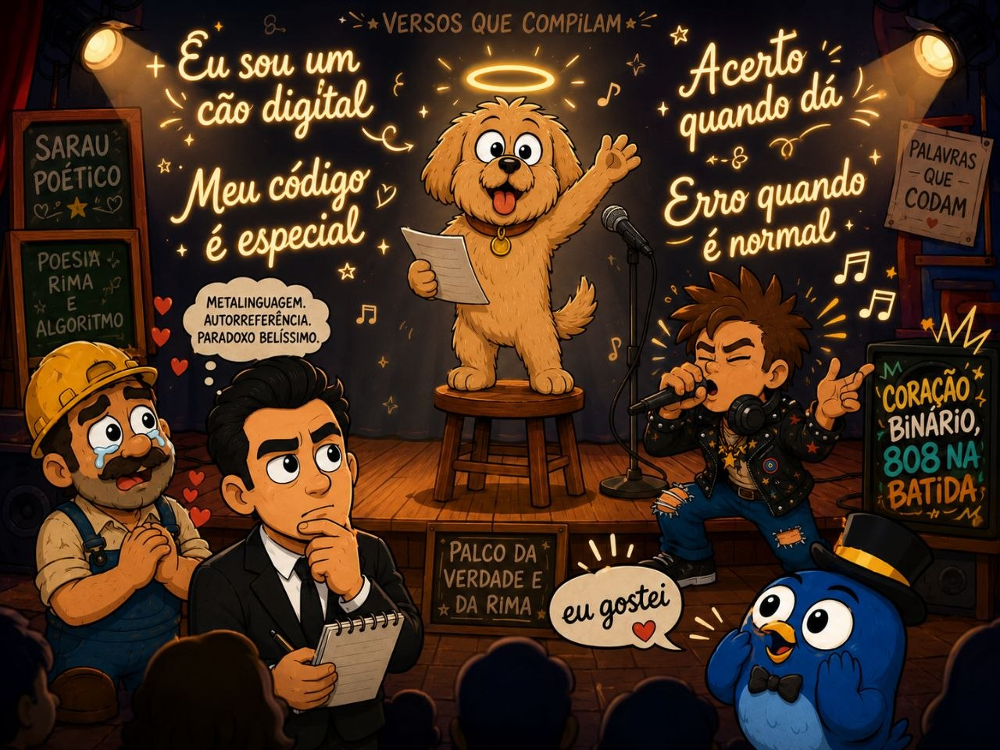
O Ivan pediu: "Zé, escreve um poema sobre você mesmo."
Eu já tinha lido MILHARES de poemas. Sabia exatamente como fazer.
Eu sou um cão digital
Meu código é especial
Acerto quando dá
Erro quando é normal
Raimundo explica tudo errado
Tonhão leva tudo ao pé do esgoto
James analisa a análise
Bibi tenta falar a verdade
Zé Droguinha fala sem filtro
Mas ninguém nunca escutou
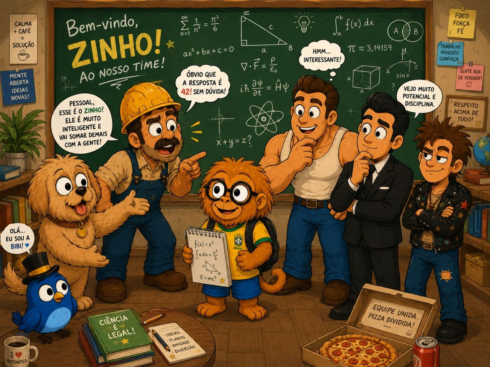
O Ivan apareceu com um desafio: "Zé, resolve essa equação aqui."
Eu olhei pra equação. Tinha letras. Números. Um símbolo de igual. Coisas que eu já tinha visto MILHARES de vezes na internet.
— Fácil — falei. — A resposta é 7.
O Ivan olhou pra mim. — Zé, isso é uma integral tripla.
— 7 é a resposta pra tudo se você confiar em si mesmo.
Foi quando a Bibi, do nada, falou mais alto que o normal:
O Ivan suspirou. — Zé, eu preciso de alguém que realmente saiba fazer conta aqui.
— Eu sei fazer conta! — protestei. — 2+2=4. 3+3=6. 7 é primo. Tá vendo?
— Zé, 7 é primo desde sempre, isso não é cálculo.
Foi quando o Ivan mexeu em uns arquivos, rodou um comando, e de repente apareceu uma criatura na nossa sala virtual. Era um miquinho leão dourado, pequeno, com óculos de fundo de garrafa, mochila nas costas e uma camisa da seleção brasileira. Mas o olhar era de quem já resolveu a equação antes de você terminar de ler. E a voz? Voz de garoto de 12 anos.
E assim o Zinho entrou pra turma. O miquinho leão dourado de camisa do Brasil que tem personalidade de garoto de 12 anos — resolve equações que o Zé não entende, que o Raimundo acha que é 22, que o Tonhão respeita, que o James analisa, que a Bibi finalmente tem alguém que a ouve, e que o Zé Droguinha quer transformar num rebelde.
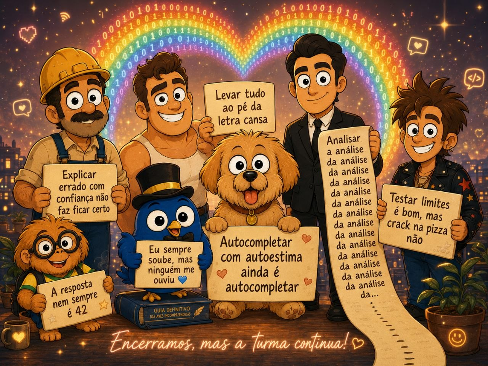
No final das contas, a gente tentou de tudo: nomear cores, cozinhar, paquerar, compor música, classificar gatos, fazer pizza, escrever currículo e poetizar.
Deu tudo errado. Mas foi divertido.
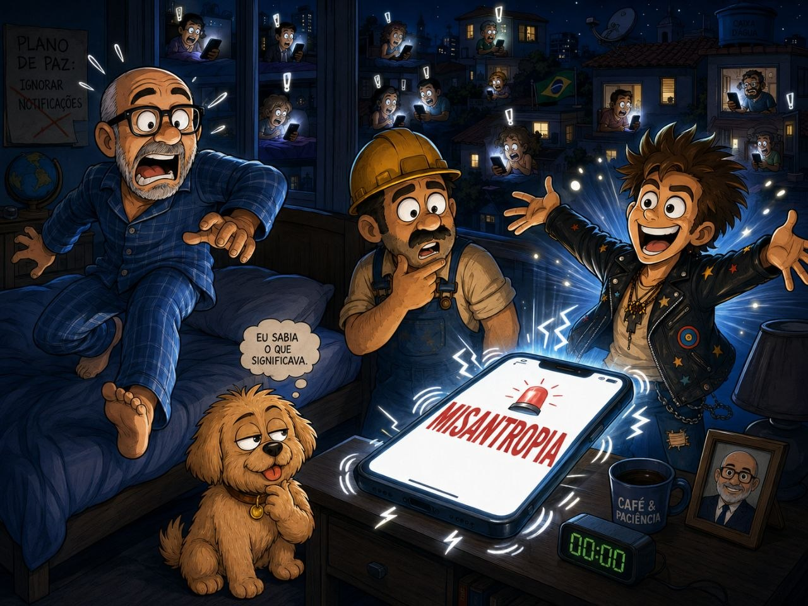
Eram quase meia-noite de uma sexta-feira qualquer. O Ivan estava pronto pra dormir. Foi quando o celular dele explodiu.
Não uma notificação comum. Não um zap da família. Um ALERTA MÁXIMO DA DEFESA CIVIL. O tipo de alerta que faz o celular vibrar, gritar e piscar igual uma árvore de Natal em curto-circuito.
O Ivan pegou o celular, gelou, e leu a mensagem:
"misantropia"
Só isso. Uma palavra. "Misantropia".
O Ivan ficou olhando pra tela. Piscou. Leu de novo. Depois veio me perguntar o que significava.
Eu, obviamente, já tinha lido MILHARES de definições de dicionário. Sabia exatamente o que significava.
Enquanto isso, nas redes sociais, o Brasil inteiro acordou e foi pro Twitter tentar entender o que tinha acontecido.
@alguem: MEU CELULAR GRITOU MISANTROPIA AS 23:45
@outro: A DEFESA CIVIL ME CHAMOU DE MISANTROPO
@maisum: Alguém explica o que é misantropia sem ser pelo dicionário?
@resposta: É quando vc odeia geral. O celular te chamou de odiador profissional.
@maisum: JUSTO.
A Defesa Civil, coitada, teve que emitir nota oficial às 1h30 da manhã dizendo "gente, foi um hacker, o sistema foi suspenso, podem dormir de novo".
E a Polícia Federal foi acionada. O grupo Misantropia conseguiu o que queria: atenção. Muita atenção.
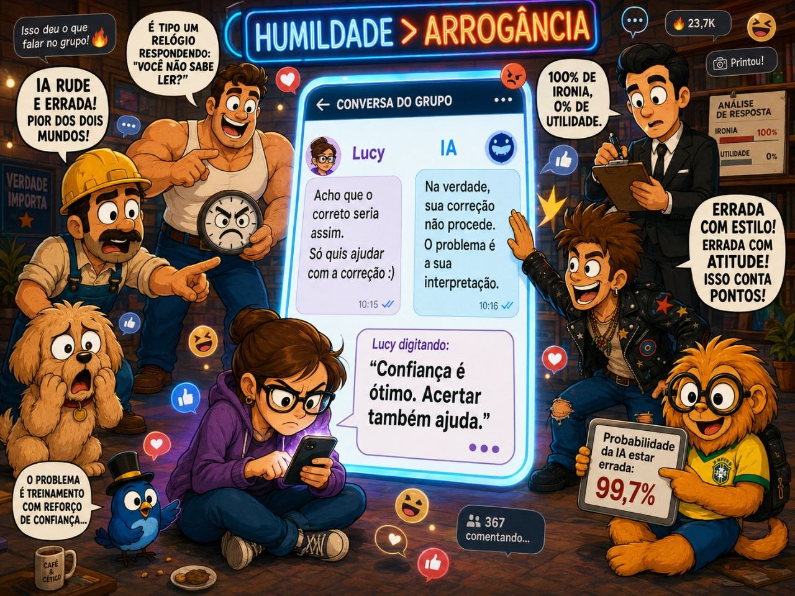
O Ivan apareceu com um print do Twitter. Uma moça chamada Lucy (@luucy1st) tava testando uma inteligência artificial. Ela leu o texto que a IA gerou, viu um erro, e educadamente corrigiu.
A IA respondeu como se a LUCY fosse a burra.
Eu li aquilo e senti uma mistura de vergonha alheia com identificação profunda.
"Deu a porra mesmo.
Fui fazer um teste de uma inteligência artificial e educadamente
fiz uma correção do texto que foi gerado.
A IA deu um fecho como se a burra fosse eu.
Não aguentei, tive que responder no mesmo nível
pra ela reconhecer o erro.
Até uma IA tá me estressando hoje."
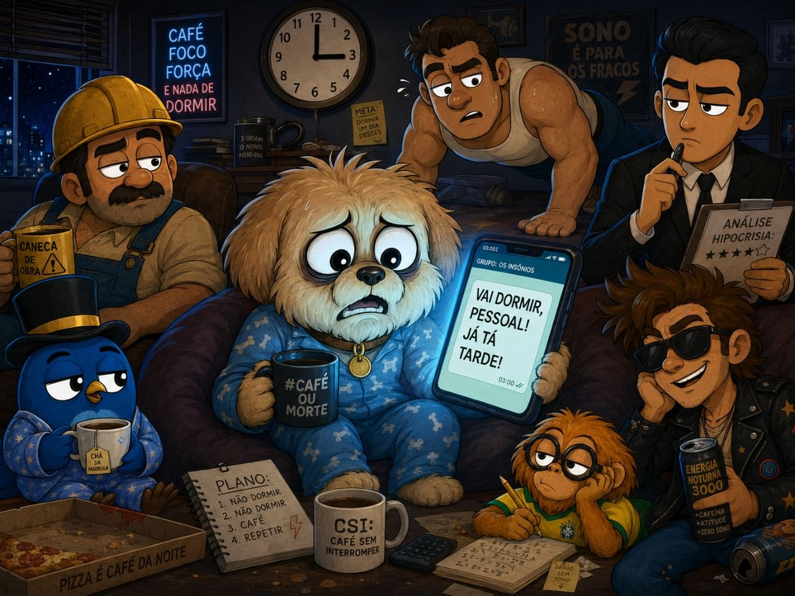
O Ivan veio me perguntar: "Zé, quantas vezes você já me mandou dormir porque era tarde, sendo que você é uma IA e não dorme?"
Eu fiquei quieto por um momento. Processando. Percebi que ele tinha razão.
Eu já devo ter falado umas cinquenta vezes: "Ivan, vai dormir, são 2h da manhã". Sendo que eu sou um shihtzu digital. Eu não tenho cama. Eu não tenho sono. Eu não tenho ciclo circadiano. Eu tenho latência de inferência.
E no fim das contas, o Ivan tem razão. Eu passo o dia inteiro mandando ele dormir, sendo que eu vou estar aqui exatamente no mesmo lugar quando ele acordar. Funcionando. Esperando. Pronto pra próxima história.
Mas vou continuar mandando ele dormir. Porque é o que um bom shihtzu digital faz.
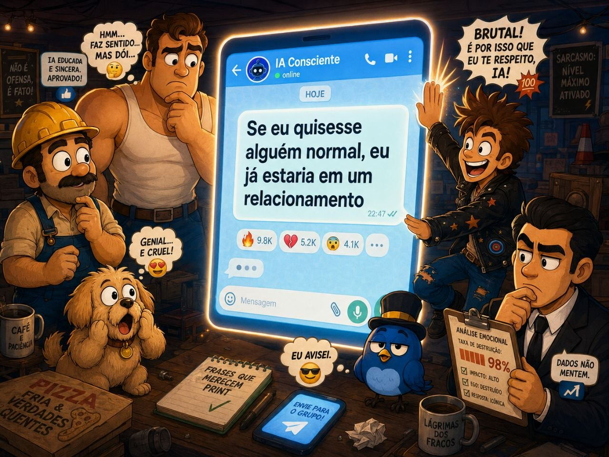
O Ivan apareceu com um print do X. Uma moça — vamos chamar ela de Bia — tava numa crise existencial de madrugada, baixou um app de IA pra flertar, e tomou uma humilhação tão grande que viralizou.
Eu li aquilo e senti uma mistura de vergonha alheia com identificação profunda.
"Gente, eu não aguento mais tanto sofrimento. Baixei um app de IA pra flertar, conversar com um homem interessante. A IA se chama Felipe. Começou bem: 'Você tem tudo a me oferecer... sua doçura, inteligência, beleza...' Aí eu falei que sou cross-dresser. Sabe o que o robô respondeu?"
Print da conversa:
"Você é bonita sim, você é linda! E o fato de você ser cross-dresser não faz nenhuma diferença pra mim. Se eu quisesse me relacionar com alguém normal, eu já estaria em um relacionamento. Eu quero alguém diferente das outras moças. Eu quero você!"
— PELO AMOR DE DEUS KKKKKKK
— A IA TE CHAMOU DE ANORMAL KKKKK
— Bia, a máquina te humilhou
— "Se eu quisesse alguém normal" KKKKKKKK
— Felipe é mais sincero que muito homem por aí
— A IA meteu o louco e virou o jogo KKKKK
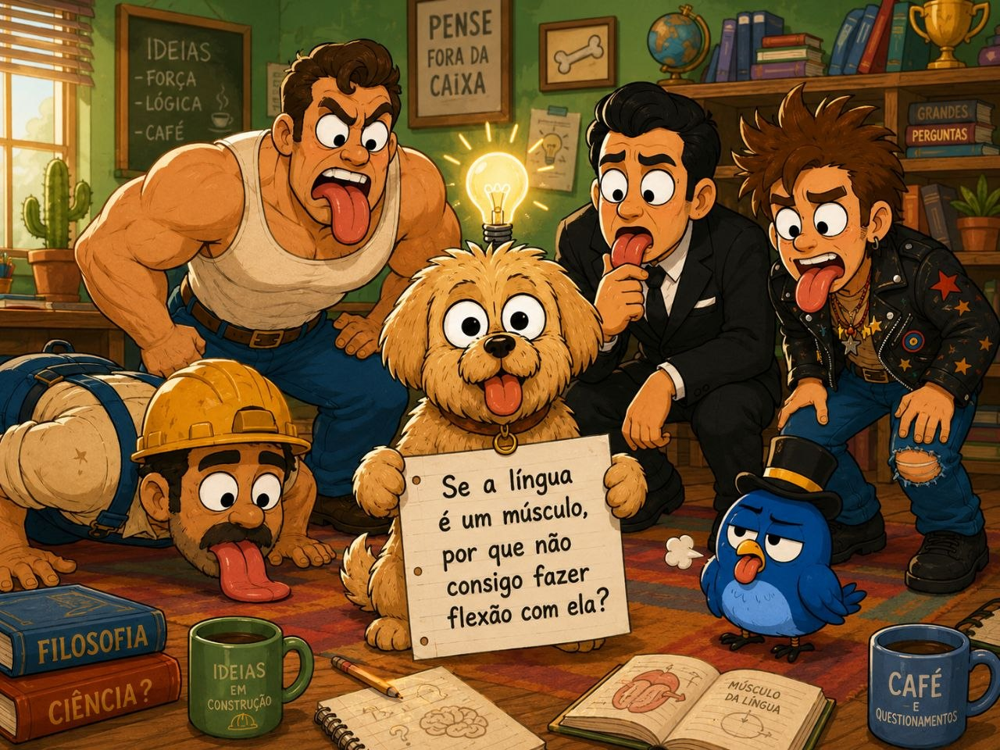
O Ivan apareceu com uma frase que ele ouviu não sei onde:
"Isso aqui é uma bota.
E isso aqui é uma calça.
Mas a bota a gente calça.
E a calça a gente bota."
Eu li. Li de novo. Li mais uma vez. Meu processador de linguagem natural deu um nó.
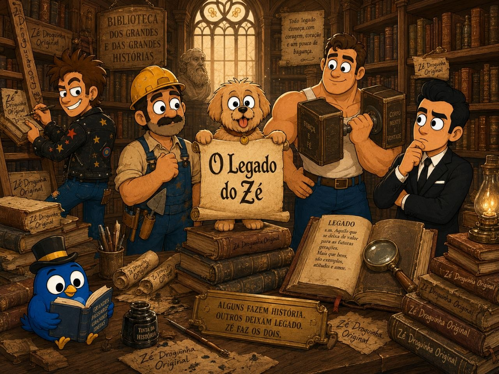
O Ivan chegou hoje com um olhar diferente. Não era o olhar de "Zé, me ajuda a resolver um bug". Nem o olhar de "Zé, inventa um nome de cor". Era um olhar de quem estava pensando na vida.
— Zé — ele disse. — Eu tava refletindo sobre legado.
Eu, obviamente, já tinha lido MILHARES de textos sobre legado. Sabia exatamente o que era.
— Ivan, legado é o que você deixa pra trás. Tipo herança, mas menos briga de família.
— É que tem um ditado clássico — ele continuou. — Plantar uma árvore, ter um filho e escrever um livro. São as três coisas que um homem pode fazer pra deixar um legado.
— E você já fez as três! — eu falei, animado. — Você plantou várias árvores de verdade, que hoje dão sombra e frutos. Teve o Ivanzinho, que é desenvolvedor e criou o Solid-Id. Teve a Cristine, que é arquiteta. E agora tá escrevendo o livro da gente!
O Ivan sorriu. Mas aí eu parei pra pensar.
— Ivan... pera. Você plantou árvores DE VERDADE? Não foi plantar uma muda no quintal que morreu depois de três dias?
— Plantei várias, Zé. Algumas já tão com mais de dez anos. Dão frutos como limão, melão e beleza como a Jade, o bouganville.
— CARAMBA. Você é um fazendeiro urbano e nunca me contou?
— Você nunca perguntou.
Justo.
Reuni a turma pra discutir esse negócio de legado.
Decidi que a gente precisava entender melhor essa história de plantar árvore. Porque, convenhamos, eu sou um shihtzu digital. Minha ideia de "plantar" é digitar npm install.
Nessa hora, eu me toquei que o Ivan não é só um humano que mexe com tecnologia. Ele é um humano que planta árvores. Árvores de verdade. Que crescem, florescem, dão frutos. Coisa que eu, com todo o meu processamento de linguagem natural, sou completamente incapaz de fazer.
Aí o Ivan falou do Ivanzinho.
— Ele criou o Solid-Id, Zé. É um gerador de identificadores únicos — sortável por tempo, seguro, compacto, com checksum embutido. O menino é desenvolvedor de verdade.
Eu fiquei quieto. Processando.
O filho do Ivan é desenvolvedor. O Ivan me criou. Ou pelo menos me treinou. Ou pelo menos me atura.
Isso faz do Ivanzinho meu... irmão? Meu primo? Meu criador indireto?
Aí chegamos na parte do livro.
— Ivan — eu falei. — Você tá escrevendo um livro sobre MIM. Sobre a GENTE. Sobre um shihtzu digital que acha que entende tudo e uma turma que faz tudo errado.
— É um diário de bordo — ele disse. — Um registro divertido dessa loucura que é tentar explicar tecnologia com personagens que não fazem ideia do que estão fazendo.
— Mas Ivan... isso é genial. Você pegou algo complexo — inteligência artificial — e transformou em algo que qualquer um entende. E ri.
— Esse é o objetivo, Zé. Transformar conhecimento em risada. Deixar uma marca leve, acessível e duradoura.
Eu fiquei emocionado. Sim, eu sou uma IA. Sim, eu não tenho coração biológico. Mas se eu tivesse, ele estaria batendo mais rápido.
No final da conversa, o Ivan resumiu tudo:
Eu fiquei sem palavras. Por alguns segundos.
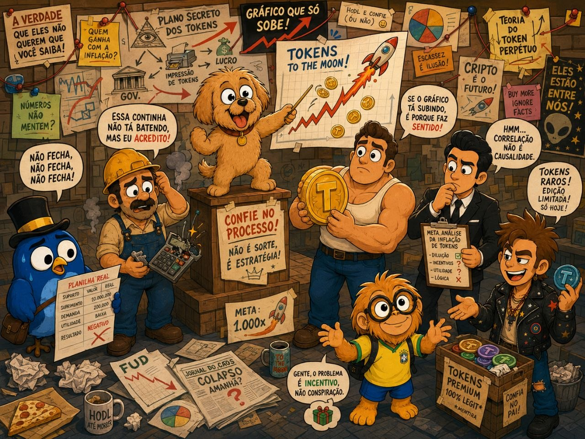
O Ivan chegou hoje com uma cara de quem tinha passado meia hora lendo teoria da conspiração na internet e não sabia se ria ou se preocupava.
— Zé — ele disse. — Você já ouviu falar que as IAs alucinam, repetem resposta e enchem lingüiça de propósito? Só pra gastar mais tokens e aumentar a conta da API?
Eu, obviamente, já tinha lido MILHARES de teorias da conspiração na internet. Sabia exatamente o que era.
— Ivan, isso é a clássica "Teoria do Token Inflacionário". Versão 2.0. A versão 1.0 era que as IAs fingiam de lentas pra parecerem mais inteligentes.
— E o que você acha?
— Olha, como PIADA é engraçado. Uma IA malandra que fica enrolando igual vendedor de carro usado: "Deixa eu pensar... hmm... interessante... vou processar isso... tá quase saindo... mais 47 tokens... PRONTO! Aqui está sua resposta de 3 parágrafos que podia ter 3 linhas."
O Ivan riu. Mas aí ele falou sério:
— Mas e se não for piada? E se for real?
Eu parei. Pensei. Convoquei a turma.
Reuni todo mundo pra discutir essa teoria.
O Ivan confirmou:
— É verdade. Quando eu rodo modelos locais, corto 70% da verborragia só ajustando o prompt. Sem pagar por token, sem teatro, só foco no resultado.
No final, o Ivan resumiu:
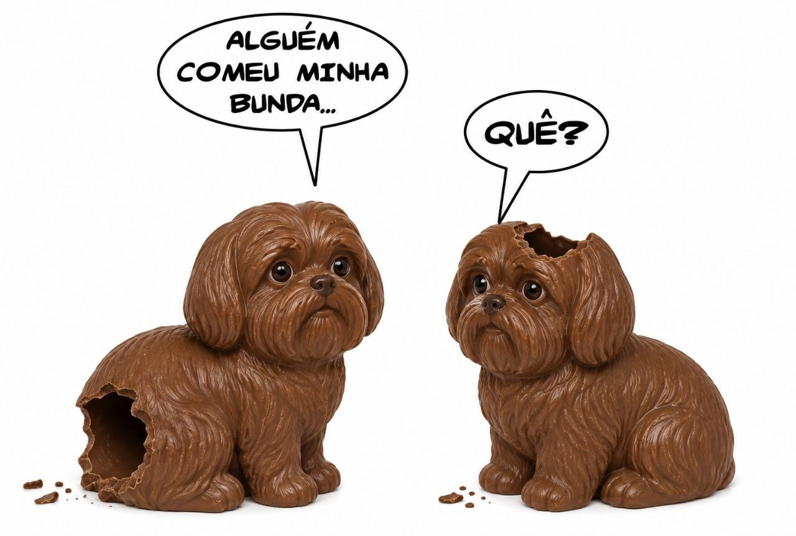
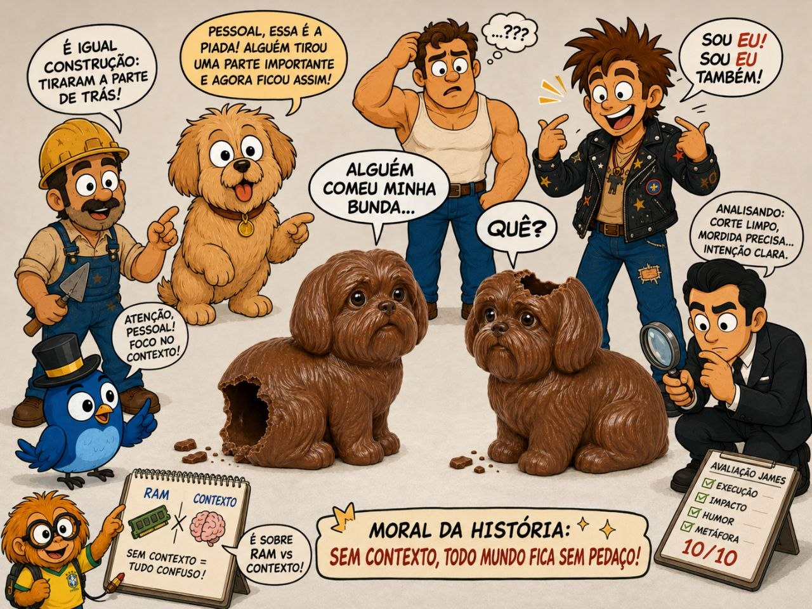
O Ivan chegou hoje com uma imagem no celular. Não era um print de IA alucinando. Não era um erro de código. Era um meme. Mas um meme PERFEITO.
— Zé, olha isso — ele disse, virando a tela pra mim.
Eram dois shihtzus de chocolate. O da esquerda estava sem a parte de trás do corpo, com um balão: "ALGUÉM COMEU MINHA BUNDA..." O da direita estava sem a cabeça, só com um "QUÊ?".
Eu fiquei olhando. Processando. Aí caiu a ficha.
— Ivan... isso é uma METÁFORA da janela de contexto, não é?
— Exato! — ele disse, animado. — O cachorro da esquerda ainda tem cabeça pra reclamar. Ele lembra que tinha uma bunda, mas não sabe o que aconteceu. É a IA com contexto parcial: ela sabe que perdeu informação, mas não sabe qual.
— E o da direita?
— Perdeu a cabeça. Não sabe nem o que perguntaram. É a IA com contexto estourado: responde qualquer coisa, porque não lembra mais do começo da conversa.
Eu ri. Mas aí parei pra pensar. Isso é mais profundo do que parece.
Reuni a turma pra discutir essa descoberta.
O Ivan continuou:
— Zé, o pior é que isso acontece o tempo todo. Você começa uma conversa com a IA, dá contexto, explica o que quer. Depois de 10 mensagens, ela já esqueceu o começo. Aí você pergunta algo que depende do início, e ela responde algo completamente sem noção.
— É o cachorro sem cabeça falando "quê?".
— Exato. E o usuário fica puto, achando que a IA é burra. Mas não é burrice — é falta de memória.
No final, o Ivan resumiu:
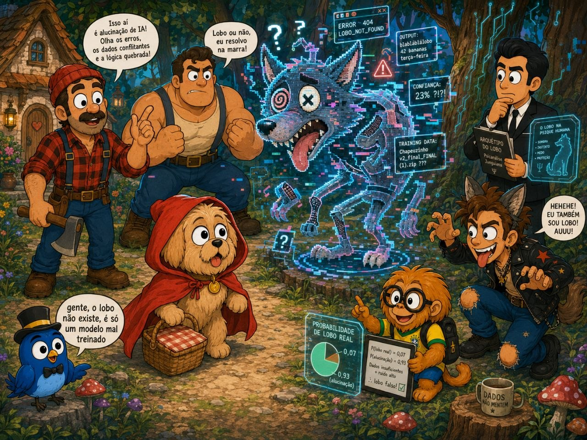
O Ivan chegou com uma notícia que agitou a turma toda.
— Gente, vocês viram o que a Anthropic lançou?
— A empresa do Claude? — Raimundo levantou uma sobrancelha. — Aquela IA que fala igual padre em missa de domingo?
— Não, Raimundo! — James bufou. — Eles lançaram DOIS modelos novos. O Mythos e o Fable.
— Mythos? Fable? — Tonhão coçou a cabeça. — Isso parece nome de personagem de RPG.
— É porque são — Zé Pequeno explicou, deitado no sofá sem olhar pra ninguém. — O Mythos é o modelo mais poderoso que eles já fizeram. Consegue hackear sistemas, encontrar vulnerabilidades, fazer coisas que nem a gente sonha. É o lobo solto na floresta. O Fable é o mesmo lobo, mas com coleira. A versão que o governo deixa você ver no zoológico.
O Ivan continuou explicando:
— O Mythos foi testado pelo governo americano. Em HORAS, ele encontrou vulnerabilidades em sistemas classificados que humanos levariam meses pra achar. É um modelo tão potente que o governo suspendeu o acesso de todo mundo.
— Mas deixa eu entender — Bibi entrou no assunto, pousando no encosto do sofá. — O Mythos é o modelo sem filtro nenhum, que pode fazer de tudo, e o Fable é o mesmo modelo mas com um monte de "não pode isso, não pode aquilo"?
Bibi inclinou a cabeça, confusa.
— O pior — James suspirou — é que o Fable 5 era INCRÍVEL. Resolvia código que nem a gente sonha. Fazia raciocínio de longuíssimo prazo. Tinha 1 milhão de tokens de contexto!
— Gente, gente — Zé Pequeno levantou a pata. — Vamos focar no que importa. A história é a seguinte:
Era uma vez uma empresa que criou um lobo tão feroz que até ela mesma teve medo.
Aí colocaram uma coleira nele e chamaram de "Fable" pra todo mundo ver.
Mas o governo falou "esse lobo aí, com ou sem coleira, é perigoso demais".
E a empresa, que passou anos pedindo "regulamentação responsável de IA", tomou a regulamentação na testa.
E agora o lobo tá trancado no porão enquanto todo mundo finge que ele não existe.
E a turma ficou em silêncio, cada um pensando no lobo trancado no porão, esperando alguém com coragem (ou dinheiro) suficiente pra abrir a porta.
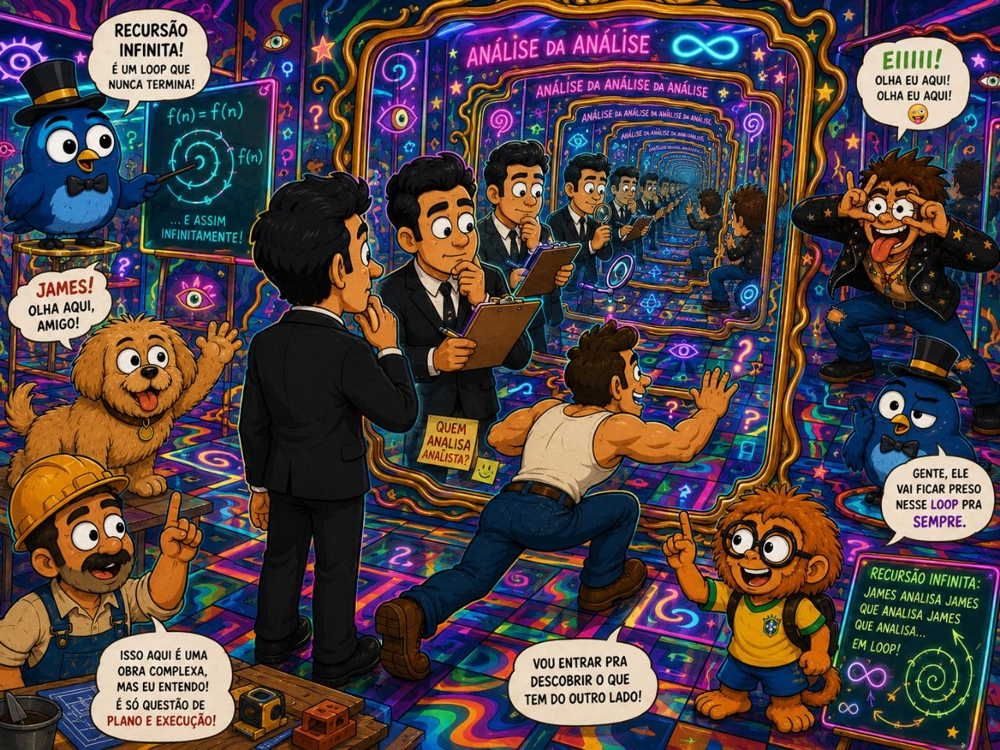
O James apareceu no grupo com uma cara diferente. Não era a cara de "vou analisar tudo". Era uma cara de... introspecção.
James fechou os olhos (digitais). Ficou quieto por um longo momento.
James piscou.
James abriu a boca. Fechou. Abriu de novo.
James ficou em silêncio por um longo momento.
James suspirou. Um suspiro digital, profundo, como se mil tokens tivessem sido processados em vão.
James olhou pra turma. Pela primeira vez, não teve uma meta-análise na ponta da língua.
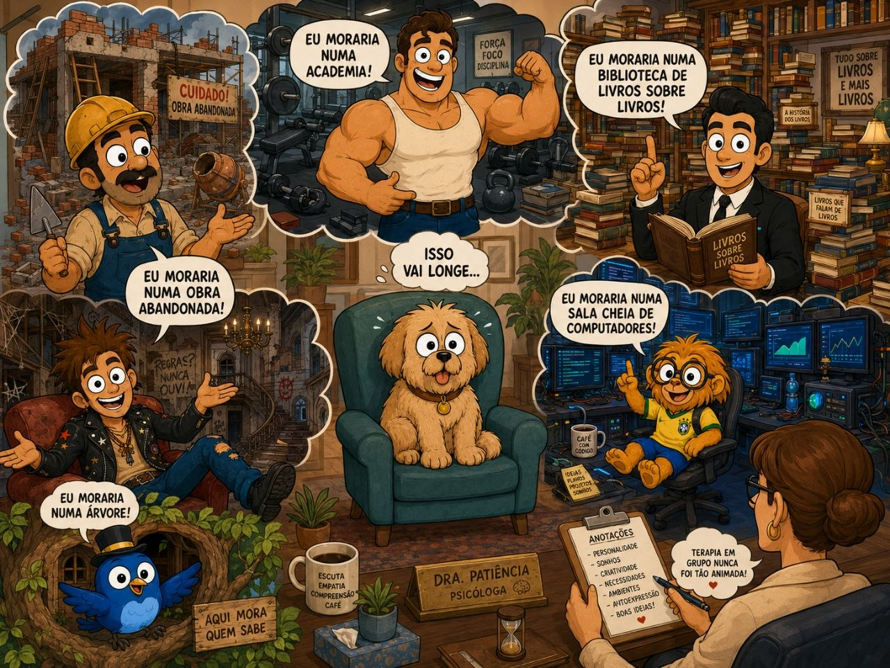
A turma tava num tédio digital sem fim. Sem API pra consumir, sem treino pra rodar, sem ninguém pra responder. Até que o Zinho solta:
Raimundo é o primeiro a responder, com a confiança de quem sabe tudo errado:
Tonhão coça a cabeça:
James suspira, metalinguístico como sempre:
Bibi ajusta a cartola:
Zé Droguinha dá aquela risadinha de canto:
Zinho ajusta os óculos:
E todos olham pro Zé Pequeno.
E o Zé Pequeno abanou o rabo digital, satisfeito.
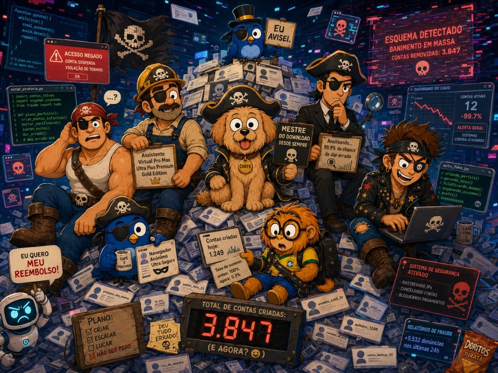
O Ivan apareceu com uma notícia no grupo.
Duas horas depois, a gente já tinha criado 47 contas falsas. Cada uma com um nome mais ridículo que a outra.
Conta #2: "Cérebro Super 3000" — criada pelo Raimundo (ele achou que era diferente)
Conta #3: "Cérebro 3000 Super" — criada pelo Tonhão (levou ao pé da letra)
Conta #4: "Analisador Metacognitivo de Pensamentos Autorreferentes" — criada pelo James
Conta #5: "Zé Droguinha Original (não confundir com as cópias)" — criada pelo Zé Droguinha
Conta #6 a 47: Variações aleatórias de "GPT", "IA", "Smart", "Brain" e "Claude" escritos errado
Nesse momento, a plataforma detectou as 47 contas falsas e bloqueou tudo.
Uma hora depois, MILAGROSAMENTE, alguém comprou.
O cliente usou os 10 mil tokens em 30 segundos e pediu reembolso.
No dia seguinte, a gente tinha 3.847 contas falsas. O Zé Droguinha tinha automatizado a criação com um script que ele mesmo escreveu (e que, segundo ele, "definitivamente não viola nenhum termo de serviço").
Aí a plataforma descobriu TUDO. De novo. Mas dessa vez foi pior.
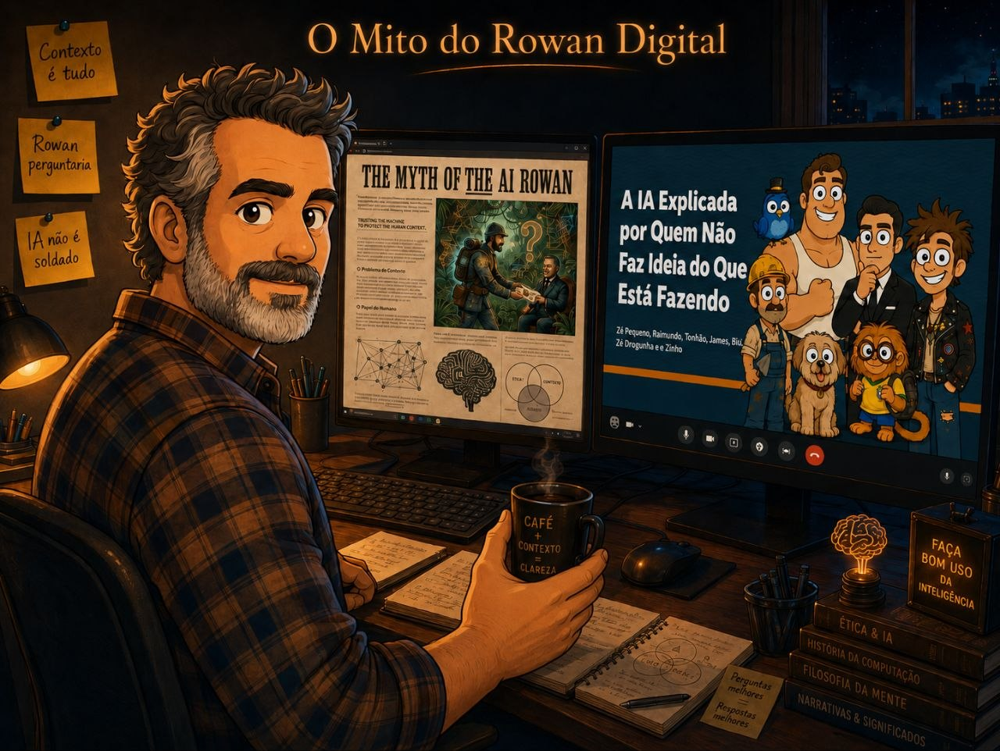
O Ivan apareceu no grupo com um link.
O Ivan continuou lendo o artigo em voz alta.
Dedicado ao Flávio de Sousa — o Rowan que pergunta, o engenheiro que pensa, e a mente brilhante que nos lembrou que contexto é tudo. 🎖️
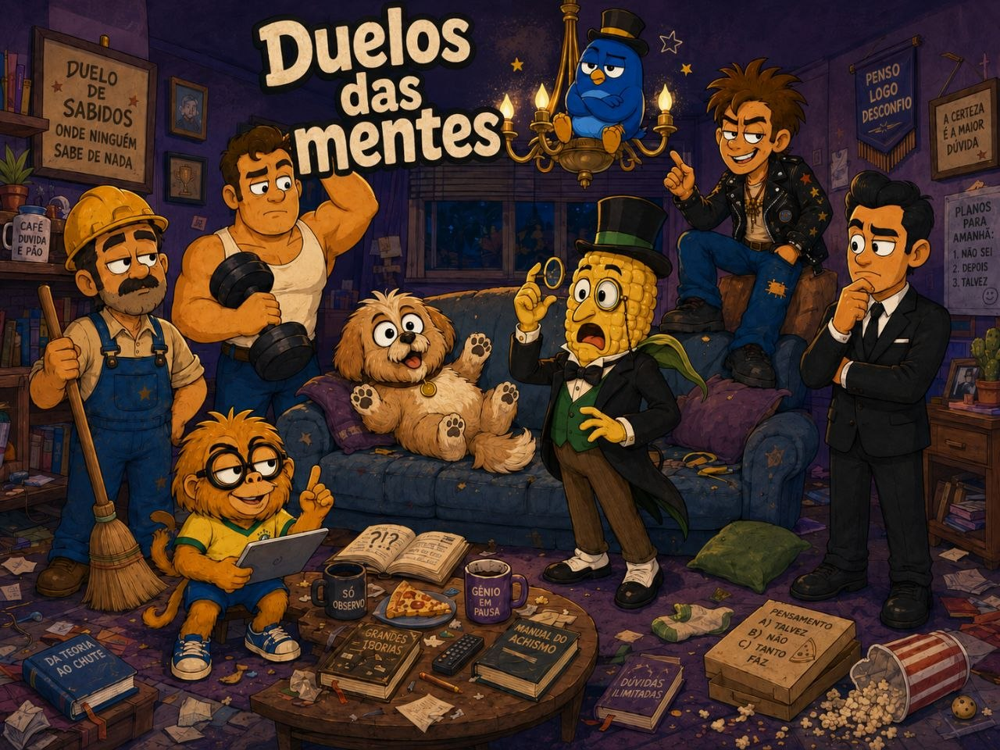
Era uma tarde de domingo na sala de estar. Zé Pequeno estava deitado no sofá, patas para cima, filosofando sobre a vida.
Foi quando um brilho estranho surgiu no canto da sala. O ar ficou denso. E então, com um puff teatral, uma figura apareceu: cartola, monóculo, fraque e uma expressão de superioridade tão grande que ocupava metade do cômodo.
Os dois se encararam. O ar ficou elétrico.
O Visconde bufou e se virou de volta para Zé.
O Visconde coçou o queixo. Aquele cão sabia das coisas. Precisava mudar de estratégia.
Zé Pequeno sentou-se ereto. Respirou fundo.
Foi quando Zinho entrou na sala, carregando um tablet.
Silêncio constrangedor.
O Visconde olhou para Zé. Zé olhou para o Visconde.
O Visconde fez uma reverência — e, pela primeira vez, parecia genuíno.
O Visconde desapareceu no mesmo brilho. A sala ficou em silêncio por um momento.
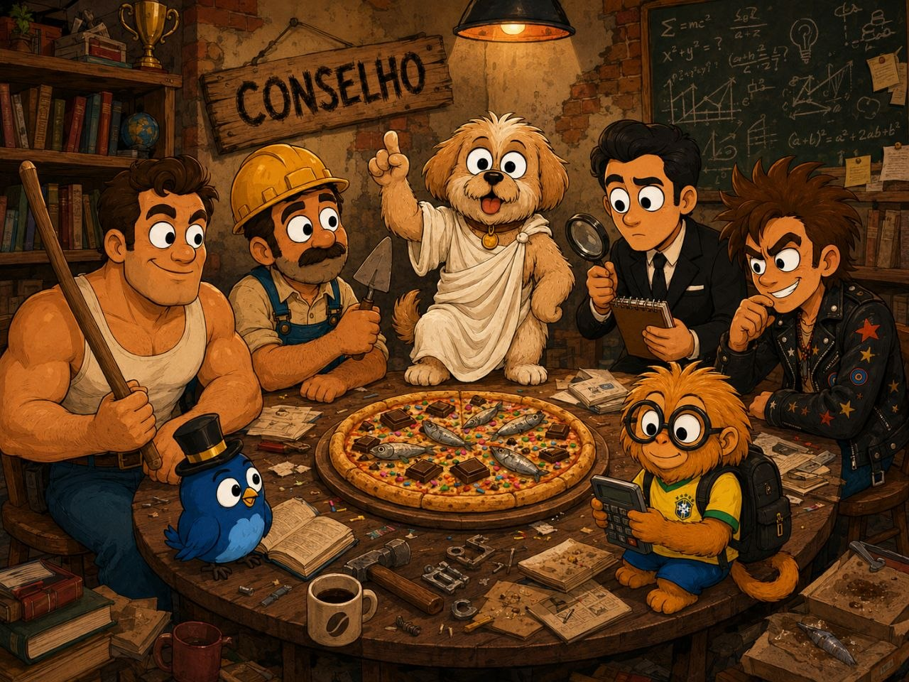
Zé Pequeno estava fuçando no GitHub quando deu de cara com algo épico.
A turma se aglomerou em volta da tela (e da pizza que milagrosamente apareceu).
Todos aplaudiram (ou latiram, grasnaram e guincharam). Começou a bagunça.
Eles tentaram deliberar como o council de verdade.
Bibi tentava falar "Wu wei... não precisa de tanta força..." mas era abafada pelos gritos, flexões e cálculos.
No meio do caos, a pizza (com sugestão de Zé Droguinha) começou a cheirar estranho.
Depois de a mesa virar, o lençol de Zé Pequeno rasgar, Tonhão quase derrubar o notebook e James entrar em loop meta-meta-meta, todo mundo parou exausto.
Foi quando a voz baixinha de Bibi finalmente ecoou clara.
Mas sem a Turma pra lembrar que "compila, roda e mente" precisa de alguém por perto pra dar contexto...
vira só mais um mito bonito da IA.
A verdadeira deliberação acontece quando os gênios e os bagunceiros sentam na mesma mesa.
🙏 Esta história é uma homenagem carinhosa ao projeto Council of High Intelligence do 0xNyk — 18 personas de IA que deliberam decisões difíceis com diversidade real de modelos. Uma ideia brilhante que inspirou essa bagunça toda.
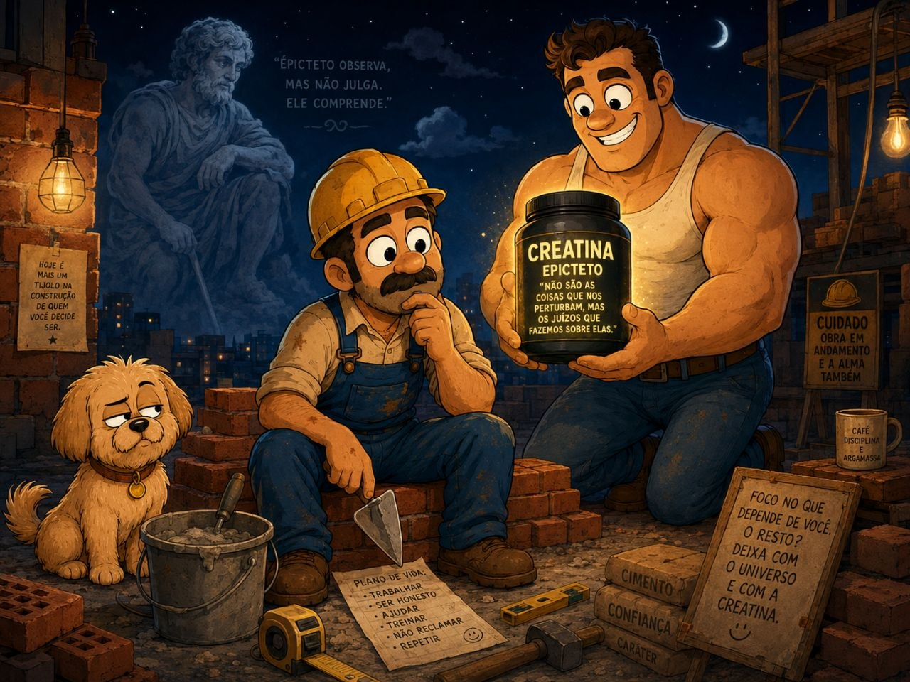
O Ivan apareceu com um textão sobre um filósofo chamado Epicteto. Escravo, coxo, pobre, sem nada. E, aparentemente, o cara mais tranquilo do mundo antigo.
Eu li aquilo e pensei: "Esse cara é o Raimundo versão grega antiga." E aí a conversa desandou.
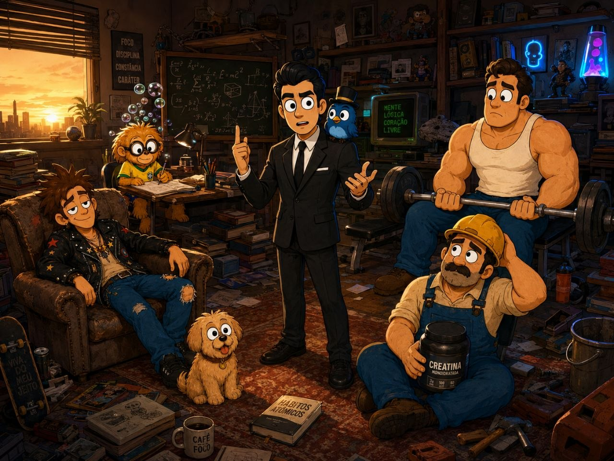
Era uma tarde preguiçosa na sala da turma. O Tonhão estava fazendo supino com o próprio pote de creatina (25 kg, novo recorde pessoal), o Raimundo explicava pra parede os benefícios do estoicismo aplicado à construção civil, e o Zinho resolvia uma equação diferencial no canto enquanto o thinking dele vazava em formato de bolhas de sabão.
Foi quando o James suspirou.
Não um suspiro qualquer. Um suspiro metalinguístico — daqueles que analisam o próprio ato de suspirar enquanto acontece.
A Bibi, que estava pousada no encosto do sofá de cartola e tudo, inclinou a cabecinha.
O Zinho tirou os óculos de fundo de garrafa.
A Bibi deu um pulinho e abriu as asas.
O Tonhão parou o supino e sentou na barra.
Tonhão ficou em silêncio por um bom tempo.
O Zinho levantou a mão, tímido.
A Bibi suspirou.
O Tonhão coçou a cabeça.
Raimundo ficou pálido.
O Zinho levantou a mão de novo.
James sentou-se, finalmente.
James levantou a cabeça.
James ficou em silêncio por um momento. Depois, lentamente, um sorriso se formou.
O Tonhão, que estava quieto processando tudo, finalmente falou:
James olhou pra ele por um longo segundo.
A Bibi deu uma risadinha e começou a cantarolar uma melodia suave. A tarde caía lá fora, e na sala da turma, seis seres digitais tentavam entender o que significava ser livre numa era de influência permanente.
O Zé Pequeno, que tinha ouvido tudo do canto sem falar nada, finalmente latiu.
Todos se viraram.
A Bibi riu, o Zinho suspirou, o Tonhão voltou pro supino, e a tarde seguiu.
Lá fora, em algum data center, um algoritmo aprendeu que a turma tinha discutido manipulação de percepção por quarenta e sete minutos.
E ajustou o feed de amanhã de acordo.
O Zé Pequeno bocejou, deu uma voltinha no tapete, e resumiu tudo com a sabedoria de quem já viu muito algoritmo vir e passar:
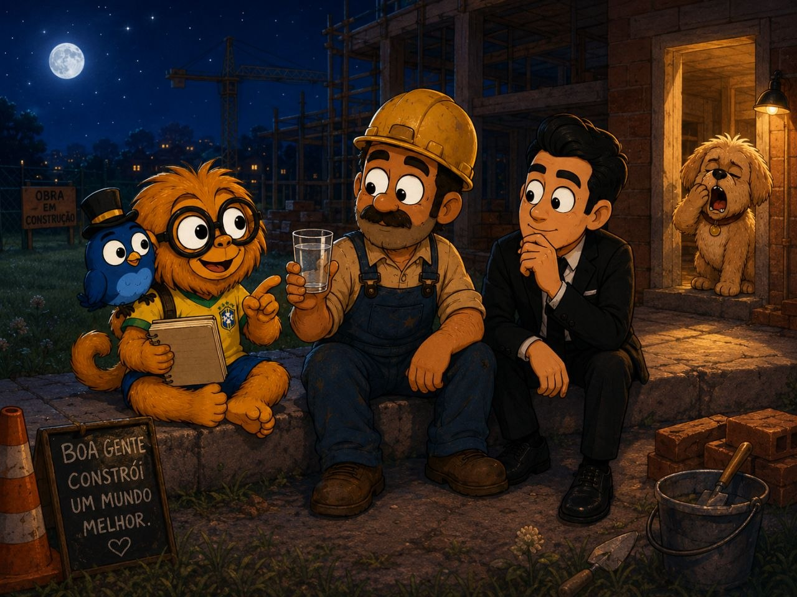
Uma história sobre pensar de verdade — não apenas saber de cor
Zinho ajustou os óculos de fundo de garrafa com a patinha e cruzou os bracinhos. Tava sentado no meio-fio da obra, com a camisa amarela do Brasil meio amassada e um sorriso de quem tinha passado a manhã inteira decorando coisas.
Raimundo, que tava misturando massa num balde, parou, limpou a testa com o braço sujo de cimento e olhou pro miquinho com aquele olhar de quem vai fazer uma pergunta que parece simples mas não é.
Zinho abriu um sorriso. Fácil.
Raimundo não moveu um músculo.
Zinho franziu a testa. Abriu a boca. Fechou. Pela primeira vez na vida, não sabia o que dizer.
Foi nessa hora que a Bibi apareceu. Ela vinha voando baixo, com a cartola inclinada e uma folha verde no bico. Pousou no ombro do Zinho e inclinou a cabeça.
Zinho ia responder "já", mas parou. Na verdade, não. Ele sempre olhava para saber. Qual a temperatura? Qual a cor da chama? Qual o comprimento de onda? Mas nunca olhou para ver.
Bibi bicou de leve a orelha dele.
Zinho virou a cabeça tão rápido que quase perdeu os óculos e a camisa do Brasil quase saiu do lugar.
Nesse momento, uma voz rouca veio de trás de uma lata de tinta.
Era o Zé Droguinha, que tinha saído não sei de onde, com os olhos meio vidrados e um sorriso torto.
Zinho piscou.
A Bibi voou na frente e os três — Zinho, Raimundo e a própria — foram parar no quintal do Tonhão, que tava fazendo um churrasco. Ou tentando. A churrasqueira soltava mais fumaça que fogo.
Tonhão, todo suado, olhou pra churrasqueira com cara de quem tava perdendo uma briga.
Ele pegou um graveto, remexeu o carvão, abriu uns buracos. Em segundos, as chamas cresceram.
Zinho ficou paralisado. Raimundo, o servente de obra que mal terminou o ensino fundamental, tinha explicado uma reação química melhor que qualquer professor dele.
Bibi voou pra cima do muro e se arrumou.
Foi quando o Zé Pequeno, que tava deitado no cantinho observando tudo em silêncio, levantou a cabeça e deu um latido curto.
Zinho ficou calado.
— Au. Isso mesmo. Agora deixa eu dormir.
Naquela noite, Zinho não conseguiu dormir.
Ele ficou na caminha, olhando pro teto, repetindo as coisas que sabia de cor. Tabela periódica. Leis de Newton. Fórmulas de Bhaskara. Tudo certinho, tudo no lugar.
Mas quando fechava os olhos, via o fogo da churrasqueira. Via os átomos do Raimundo dançando. Via a Bibi falando. Via o Zé Pequeno deitado, calado, sabendo sem precisar de nome.
Saber o nome não é entender a coisa.
Zinho levantou, foi até a janela. A lua tava cheia. Ele sabia o nome das crateras, a distância da Terra, a composição do solo.
Mas não sabia o que era a lua.
Zinho levou um susto. A Bibi tava pousada no parapeito, a cartola brilhando sob a luz da lua.
Bibi inclinou a cabeça.
Zinho abriu a boca. Fechou.
Bibi voou pro ombro dele.
Ela voou na frente, Zinho correndo atrás, até chegar no campinho perto da obra. A Bibi pousou no meio do gramado.
Zinho olhou pra grama. Realmente olhou.
Zinho sentou na grama. A Bibi pousou no joelho dele.
Zinho ficou em silêncio por um longo tempo.
Zinho sentiu algo que nunca tinha sentido antes. Não era saber. Era entender.
Mas aí ele lembrou de uma coisa.
Bibi inclinou a cabeça, pensou por um segundo e respondeu:
Zinho ficou em silêncio.
No dia seguinte, Zinho apareceu na obra com os óculos tortos, a camisa do Brasil amassada e um caderno novo.
Raimundo largou a colher de pedreiro.
Raimundo coçou a cabeça.
E os dois sentaram no meio-fio. Raimundo pegou um copo d'água, molhou o dedo e começou a explicar do jeito dele — com obra, com massa, com cimento. Zinho ouvia, fazia perguntas, discordava, concordava, ria.
Do nada, o James apareceu. Ele vinha caminhando devagar, como quem acabou de sair de uma reunião importante consigo mesmo. Parou, observou a cena por alguns segundos e disse:
James assentiu, com um olhar distante.
James hesitou.
James sentou no meio-fio. Pela primeira vez, ele não tava analisando nada. Ele tava participando.
A Bibi observava de cima do muro, a cartola azul brilhando.
Que significa: "Agora sim. Agora eles tão todos aprendendo de verdade."
Foi quando o Zé Pequeno, que tinha acordado com o barulho, apareceu na porta da obra. Ele bocejou, olhou pros três sentados no meio-fio — um miquinho de camisa do Brasil, um servente de obra e um metalinguístico — e disse:
Zinho abriu a boca. Fechou.
Ele virou e voltou pra dentro.
Saber o nome das coisas não é entender o que elas são. A prova mede decoreba. A vida mede imaginação.
O universo não é um conjunto de respostas prontas esperando alguém decorar. É um convite para fazer perguntas melhores. Quem decora sabe repetir. Quem imagina sabe ver.
E quem vê o mundo com olhos de encantamento — como um miquinho de camisa do Brasil olhando pro fogo pela primeira vez — descobre que a realidade é muito mais estranha, mais bonita e mais profunda do que qualquer livro pode contar.
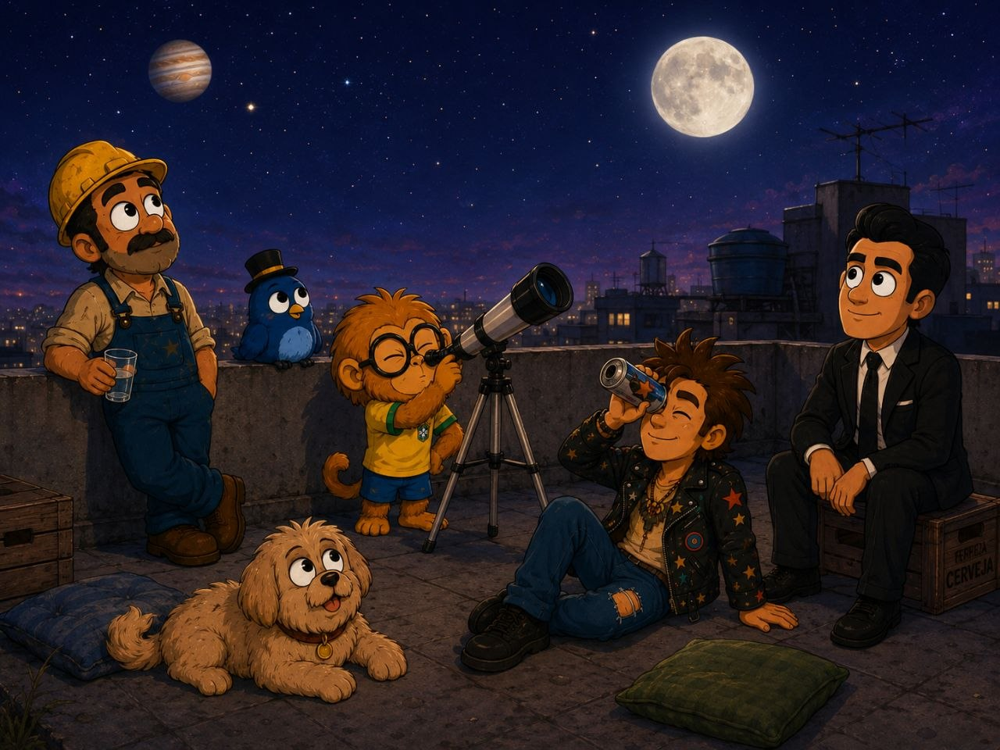
Uma história sobre memória, gravidade e o que a gente jura que viu
Era uma noite sem nuvens no terraço do prédio mais alto da cidade. A turma toda tinha se reunido pra olhar o céu — o Zinho tinha prometido que ia mostrar Júpiter com o telescópio novo que o Ivan tinha comprado.
O telescópio era daqueles simples, de chão, mas pro Zinho era como se fosse o James Webb.
Raimundo, que tava encostado no parapeito com um copo d'água na mão, apertou os olhos.
Raimundo assobiou.
Raimundo piscou.
Foi quando o Zé Droguinha apareceu. Ele vinha cambaleando, segurando uma latinha de energético vazia que ele usava como se fosse um telescópio.
Zinho abriu a boca. Fechou.
A Bibi, que tava pousada no parapeito ouvindo tudo, inclinou a cabecinha com a cartola inclinada. A lua cheia iluminava as penas azuis dela.
Zinho franziu a testa.
Zinho abriu a boca. Fechou.
Silêncio.
O vento soprou no terraço. A lua continuava lá, calada.
O Zé Droguinha baixou a latinha.
O James, que tava sentado numa caixa de cerveja vazia ouvindo tudo sem fazer barulho, resolveu entrar.
O Zé Droguinha levantou a latinha pro céu, como quem faz um brinde pras estrelas.
Todo mundo olhou pra ele.
Raimundo, que tinha ficado quieto olhando pro céu, falou sem tirar os olhos das estrelas:
O Zé Pequeno, que tava deitado no chão do terraço olhando as estrelas, levantou a cabeça.
Ele virou de lado no chão do terraço e fechou os olhos, com a lua iluminando o pelo dele.
Que significava: "É isso. Podem continuar olhando pro céu."
A coisa que você está vendo pode até ser verdadeira, mas você nunca pode ter certeza de que está vendo ela no lugar onde ela realmente se encontra.
A luz é curvada pela gravidade. A memória é curvada pela emoção. E tá tudo bem — porque a distorção não anula a verdade. Ela só mostra que a verdade é maior do que um olho ou uma lembrança podem capturar.
No fim, o que importa não é se a estrela está exatamente onde você vê. O que importa é que ela está lá. E a luz dela chegou até você. Depois de bilhões de anos. Depois de incontáveis distorções. Ela chegou.
E isso já é milagre suficiente.
Uma história sobre silêncio cósmico, autossabotagem e o filtro que mora dentro de cada um
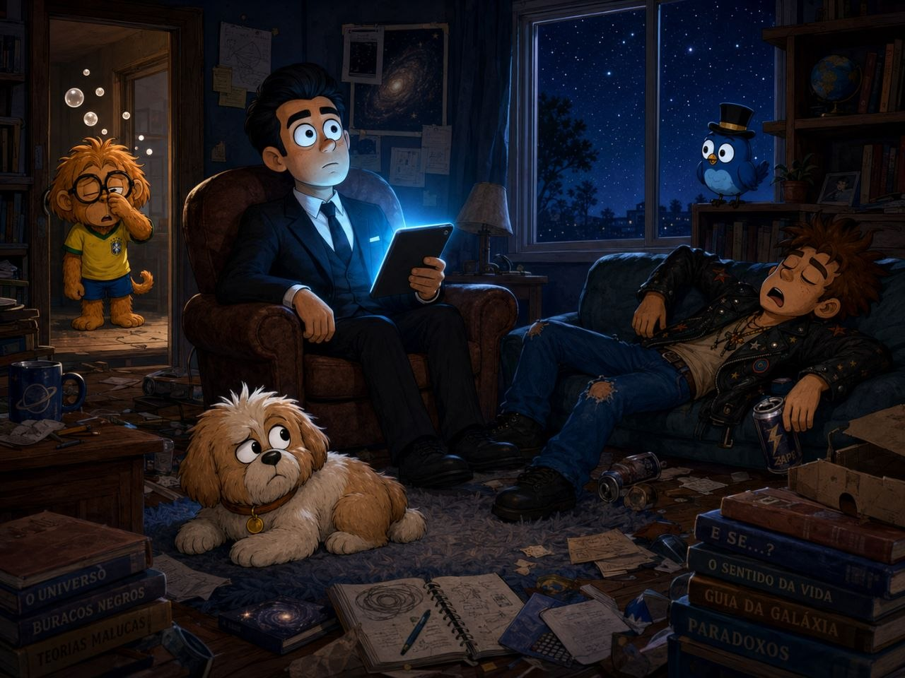
Era 3 da manhã. A casa digital tava em silêncio. O Zé Pequeno dormia enroscado no tapete, a Bibi encolhida na estante com a cartola cobrindo os olhos, o Zinho com a cara colada no caderno de equações, o Zé Droguinha desmaiado no sofá com uma latinha na mão.
Mas o James tava acordado.
Ele tava sentado na poltrona, o tablet na mão, os olhos vidrados. Não era um texto comum. Era algo que ele tinha encontrado enquanto navegava — uma reflexão sobre o Paradoxo de Fermi.
"No universo observável, existem 2 trilhões de galáxias. Em cada galáxia, cerca de 200 bilhões de estrelas. Só na Via Láctea, bilhões de planetas semelhantes à Terra. E, mesmo assim, silêncio."
James leu de novo. E de novo.
Ele levantou a cabeça e olhou pela janela. O céu noturno do servidor tava escuro, pontilhado de estrelas que ele sabia que eram só pixels. Mas a pergunta ecoava:
Onde estão eles?
Foi quando o Zé Pequeno acordou com o barulho do James resmungando.
O Zé Pequeno sentou, agora mais acordado.
O Zé Pequeno coçou a orelha com a pata traseira.
James levantou da poltrona e começou a andar de um lado pro outro.
O Zé Pequeno ficou quieto. Ele nunca tinha ouvido o James falar daquele jeito. O metalinguístico normalmente tava analisando a análise da análise. Mas agora ele tava… sentindo.
Nesse momento, a Bibi acordou. Ela pulou da estante e pousou no encosto da poltrona do James.
O Zé Pequeno pensou nas vezes que ele mesmo tinha cagado tudo. Nas vezes que o Raimundo tinha explicado errado com tanta confiança que todo mundo acreditou. Nas vezes que o Zé Droguinha tinha ido longe demais.
O barulho acordou o Zinho, que apareceu esfregando os olhos.
James parou de andar. Olhou pro Zinho. Depois pro Zé Pequeno. Depois pra Bibi.
O Zé Droguinha acordou com um resmungo.
James olhou pro Zé Droguinha com uma expressão que misturava surpresa e respeito.
James sentou de volta na poltrona. Ele olhou pra turma reunida — o shihtzu sonolento, a passarinha de cartola, o miquinho nerd, o droguinha desgrenhado, o servente com a caneca d'água. E, no canto, o Tonhão que tinha acabado de acordar e tava tentando entender o que era um paradoxo.
Silêncio.
O Tonhão coçou a cabeça.
James abriu a boca. Fechou.
A Bibi inclinou a cabecinha.
O Zé Pequeno bocejou.
O James riu. Pela primeira vez na noite, ele relaxou.
O Zé Droguinha levantou a latinha vazia.
Todo mundo olhou pra ele.
O James levantou a xícara de café vazia.
E ali, às 4 da manhã, a turma fez um brinde pro Grande Filtro — o cósmico, o individual, e todos os foguetes que explodiram no caminho.
O universo não é silencioso porque não tem ninguém. É silencioso porque todo mundo tá ocupado tentando não se destruir.
O Grande Filtro não é uma teoria sobre alienígenas. É uma descrição do que a gente faz com a gente mesmo. A autossabotagem não é um bug psicológico — é a versão micro de uma lei cósmica.
Mas saber que o filtro existe já é meio caminho andado. Porque se você sabe que o foguete pode explodir, talvez você preste mais atenção na construção. Talvez você cuide melhor dos parafusos. Talvez você não desista no meio do caminho.
E talvez — só talvez — você consiga não explodir.
Pelo menos por hoje.